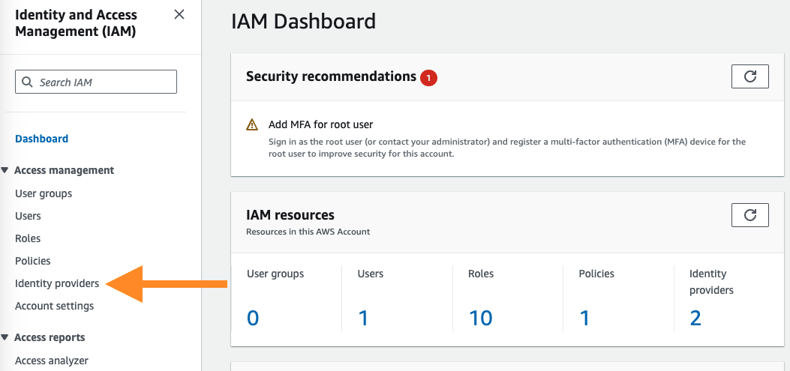
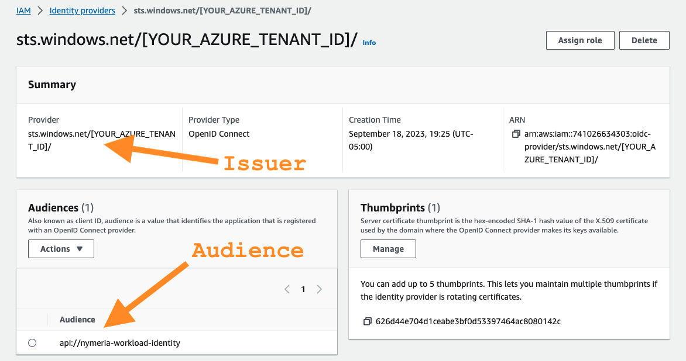
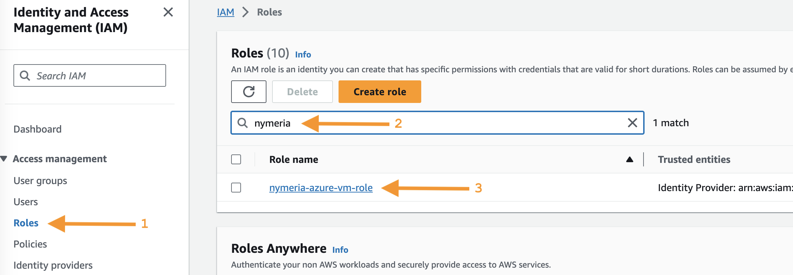
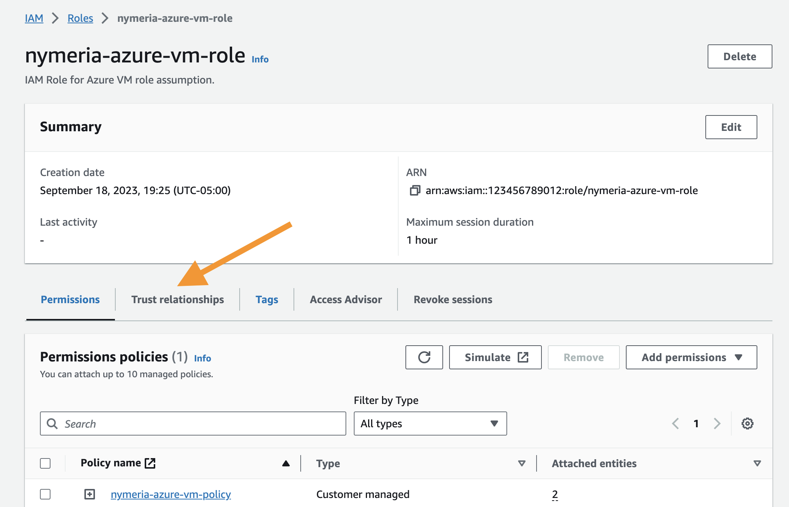

AWS Identity Federation
During the Getting Started section, you deployed the 02_aws_init Terraform configuration to your AWS account. The AWS configuration includes an AWS Identity Provider resource that trusts your Azure Entra ID tenant and an IAM role with permissions to read data from the Nymeria S3 bucket. In this section, we will explore how the AWS Identity Provider configuration trusts the Nymeria virtual machine and confirm the virtual machine can assume the IAM role.
Nymeria Virtual Machine Identity Token
Connect to the Nymeria virtual machine and request an OpenID Connect identity token from Instance Metadata Service (IMDS) with the audience set to api://nymeria-workshop. Then, decode the JWT to view the subject, issuer, and audience claims.
-
Browse to the Azure Portal open Cloud Shell again.

-
Run the following command to connect to the Nymeria virtual machine over SSH.
-
Run the following command in the Nymeria virtual machine to request an OpenID Connect JSON Web Token (JWT) with the audience set to
api://nymeria-workshop. The return value will be stored in theAZURE_JWTenvironment variable. -
Run the following command to decode the JWT.
Terminal Output
{ "aud": "api://nymeria-workshop", "iss": "https://sts.windows.net/[YOUR_AZURE_TENANT_ID]/", "iat": 1695248707, "nbf": 1695248707, "exp": 1695335407, "aio": "E2FgYBGc6rGGA2rdd8+4T5srd345DDD=", "appid": "e925f5a3-240b-464c-b44b-f2ba753231be", "appidacr": "2", "idp": "https://sts.windows.net/[YOUR_AZURE_TENANT_ID]/", "oid": "1a3b54b3-2812-4c44-bb40-9e4fe51760a3", "rh": "0.AVgAaMf7MCTi0EaQ92P3QneTKEpwXyZXB19Jo9CxYRO9mM9YAAA.", "sub": "[YOUR_NYMERIA_VM_SUBJECT_ID]", "tid": "[YOUR_AZURE_TENANT_ID]", "uti": "gN-9UtHAXUCaxbGiix6uAQ", "ver": "1.0" } -
The Nymeria virtual machine's claims in the decoded JWT are as follows:
-
The identity token's
issclaim is set tohttps://sts.windows.net/[YOUR_AZURE_TENANT_ID]/. -
The identity token's
audclaim is set toapi://nymeria-workshop. -
The identity token's
subuniquely identifies the Nymeria virtual machine. The unique identifier is the Azure virtual machine's managed identity object id in the Entra ID tenant.
-
AWS Identity Provider
Inspect the AWS Identity Provider and IAM Role configuration. Confirm the OpenID Connect token's subject, issuer, and audience claims match the values found in the Nymeria Virtual Machine Identity Token.
-
Sign into the AWS Web Console again.
-
Set the region (top right-hand corner) to
us-east-2 (Ohio). -
Navigate to the IAM service.
-
Select the Identity providers menu item from the left-hand menu.

-
Select the sts.windows.net/[YOUR_AZURE_TENANT_ID] identity provider to view the details.
-
Confirm the following configuration matches the Nymeria virtual machine's identity token. The configuration grants any identity token issued by the Azure Entra ID tenant access to the AWS account's identity provider resource.
-
The Provider matches the Nymeria virtual machine's identity token's
issclaim:https://sts.windows.net/[YOUR_AZURE_TENANT_ID]/. -
The Audience matches the Nymeria virtual machine's identity token's
audclaim:api://nymeria-workshop.

-
-
The AWS identity provider resource does not inherently grant access to IAM permissions. Permissions are granted using an IAM Role's trust policy. To view the Nymeria IAM Role's trust policy, select the Roles menu item from the left-hand menu. Search for the
nymeria-azure-vm-rolerole and open the details.
-
On the
nymeria-azure-vm-rolerole's details page, select the Trust relationships tab.
-
Inspect the
nymeria-azure-vm-rolerole's trust policy granting the assume role permission to the Nymeria virtual machine's managed identity.IAM Role Trust Policy
{ "Version": "2012-10-17", "Statement": [ { "Sid": "", "Effect": "Allow", "Principal": { "Federated": "arn:aws:iam::123456789012:oidc-provider/sts.windows.net/[YOUR_AZURE_TENANT_ID]}/" }, "Action": "sts:AssumeRoleWithWebIdentity", "Condition": { "StringEquals": { "sts.windows.net/[YOUR_AZURE_TENANT_ID]/:aud": "api://nymeria-workload-identity", "sts.windows.net/[YOUR_AZURE_TENANT_ID]/:sub": "[YOUR_NYMERIA_VM_SUBJECT_ID]" } } } ] }-
The Principal element trusts tokens issued by the Entra ID tenant.
-
The
audcondition validates the token's audience claim is equal toapi://nymeria-workload-identity. -
The
subcondition validates the token's subject claim is equal to the Nymeria virtual machine's managed identity object id.
-
Privilege Escalation Path
Misconfigured identity federation IAM trust policies can allow privilege escalation vulnerabilities. Researchers have identified several instances with misconfigured GitHub action trust policies. The root cause is forgetting to apply the sub condition restricting access to a specific principal.
AWS Workload Identity Federation
Use the Nymeria virtual machine's OpenID Connect token to assume the AWS IAM role. Then, use the temporary credentials to access data in AWS S3.
-
Browse to the Azure Portal open Cloud Shell again.
-
Run the following command to connect to the Nymeria virtual machine over SSH.
-
Run the following command in the Nymeria virtual machine to request an OpenID Connect JSON Web Token (JWT) with the audience set to
api://nymeria-workshop. The return value will be stored in theAZURE_JWTenvironment variable. -
Source the environment variables in the
~/.aws/get-resources.shscript and verify the role ARN is populated in theAWS_CROSS_CLOUD_ROLE_ARNenvironment variable. -
Run the following command to assume the
nymeria-azure-vm-roleAWS IAM role using the Nymeria virtual machine's OpenID Connect token.export $(aws sts assume-role-with-web-identity --role-arn "$AWS_CROSS_CLOUD_ROLE_ARN" --role-session-name "nymeria-demo" --web-identity-token "$AZURE_JWT" --duration-seconds 3600 --output text --query "[['AWS_ACCESS_KEY_ID',Credentials.AccessKeyId],['AWS_SECRET_ACCESS_KEY',Credentials.SecretAccessKey],['AWS_SESSION_TOKEN',Credentials.SessionToken]][*].join(\`=\`,@)") -
Verify the AWS IAM role was successfully assumed by running the following command.
-
Run the
aws s3 cpcommand to download the Nymeria image from the S3 bucket using the stolen long-lived credentials.
Next Steps
AWS Workload Identity
With this configuration, we have successfully killed the AWS long-lived access keys. The Nymeria virtual machine is now using its native identity token (JWT) to assume the AWS IAM Role and access the AWS S3 API.
Next, move on to the Google Workload Identity Federation section to learn how to authenticate the Nymeria virtual machine using AWS Identity Federation.